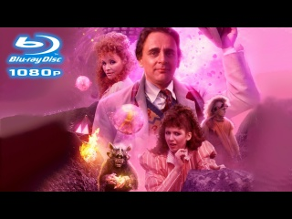
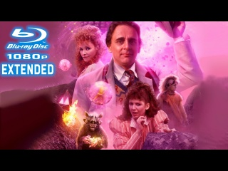
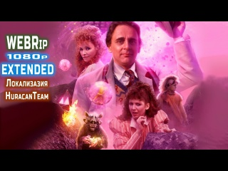
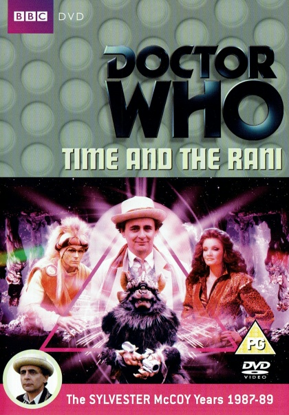
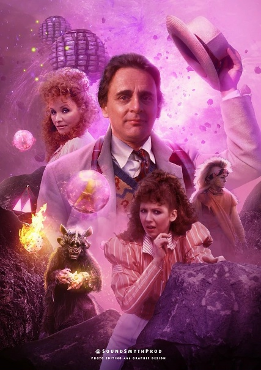

Субтитры: Русские и Английские |  |
|---|---|
Субтитры: отсутствуют |  |
с фанатской локализацией видеоряда (HuracanTeam) Субтитры: отсутствуют |  |
Time and the Rani
Дата выхода: 7-28 сентября 1987
Формат: 4 эпизода по 25 мин.
|
ТАРДИС атакована, Доктор ранен и вынужден регенерировать. Новое лицо — Седьмой Доктор — приходит в себя на планете Лакертия, где Рани, его старая знакомая из числа Повелителей Времени, выдаёт себя за Мел и пытается использовать дезориентированного Доктора в своих целях.
Дебют Сильвестра Маккоя — седьмого Доктора. Регенерация показана без участия Колина Бейкера: его лицо проецируется на экран, а затем сменяется новым. Маккой сам выполнял трюки, включая знаменитое жонглирование — он профессиональный фокусник. Кейт О'Мара в роли Рани повторяет свою роль из «Деформации разума» Пятого Доктора.
VHS - июль 1995 |  DVD - 13 сентября 2010 |  Blu-ray - 7 октября 2019 * Версия в нашей группе |
|---|
